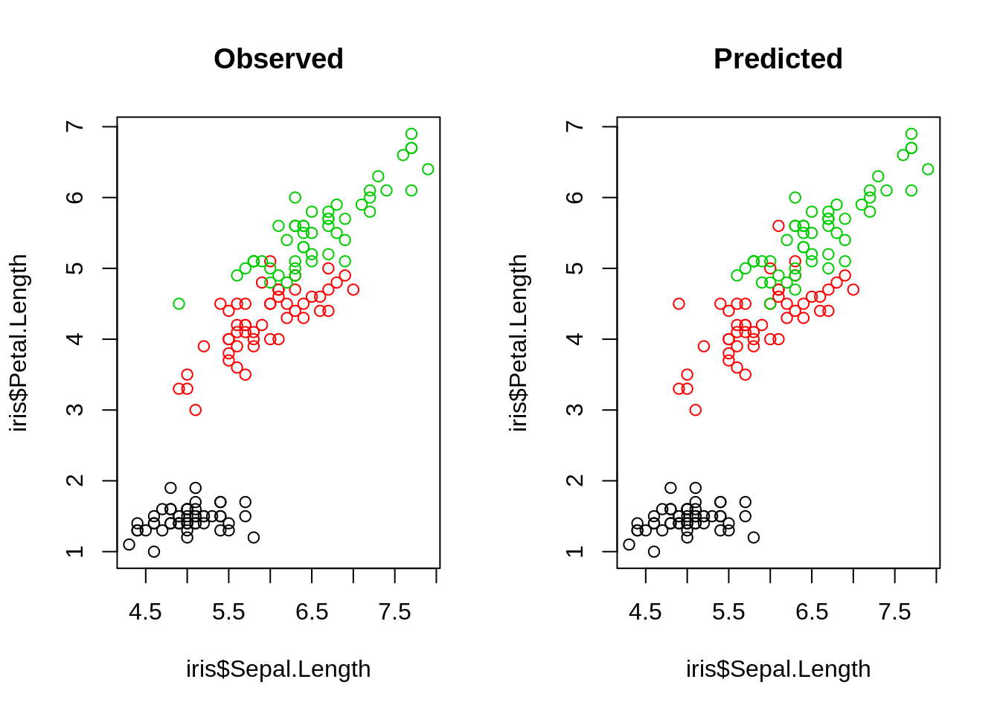

2 Introduction to Machine Learning
In this introductory chapter, we introduce the three basic ML tasks
- Supervised learning
- Unsupervised learning
- Reinforcement learning
In supervised learning, you train an algorithm using labeled data, which means that you already know the correct answer for a part of the data (the so called tracings data).
Unsupervised learning is a technique, where one does not need to supervise the model. Instead, you allow the model to work on its own to discover information.
Reinforcement learning is a technique that emulates a game-like situation. The algorithm comes up with a solution by try and error and gets for the actions ether rewards or penalties. As in games, the goal is to maximize the rewards. We will talk on the last day more about this technique.
For the moment, we will focus on the first two tasks, supervised and unsupervised learning. To do so, we will first start with a small example, but before you start with the code, here a video to remind you of what we talked about in the class:
2.1 Supervised learning: regression and classification
The two most prominent branches of supervised learning are regression and classification. Fundamentally, classification is about predicting a label and regression is about predicting a quantity. The following video explains that in more depth:
2.1.1 Supervised regression using Random Forest
The random forest (RF) algorithm is possibly the most widely used ML algorithm and can be used for regression and classification. We will talk more about the algorithm on Day 2. In the following we see a typical workflow for a regression: First, we visualize the data. Next, we fit the model and lastly we visualize the results.
Visualization of the data:
plot(iris, col = iris$Species)Fitting the model
library(randomForest)
m1 <- randomForest(Sepal.Length ~ ., data = iris)
# str(m1)
# m1$type
# predict(m1)
print(m1)##
## Call:
## randomForest(formula = Sepal.Length ~ ., data = iris)
## Type of random forest: regression
## Number of trees: 500
## No. of variables tried at each split: 1
##
## Mean of squared residuals: 0.1362908
## % Var explained: 79.99Visualization of the results
par(mfrow = c(1,2))
plot(predict(m1), iris$Sepal.Length, xlab = "predicted", ylab = "observed")
abline(0,1)
varImpPlot(m1) To understand, the structure of a RF in more detail, we can use a package from GitHub
To understand, the structure of a RF in more detail, we can use a package from GitHub
# devtools::install_github('araastat/reprtree')
reprtree:::plot.getTree(m1, iris)
2.1.2 Supervised classification using Random Forest
With the RF, we can also do classification. The steps are the same as for regression tasks, but we can additionally, see how well it performed by looking at the so called confusion matrix. Each row of this matrix contains the instances in a predicted class and each column represent the instances in an actual class. Thus the diagonals are the correctly predicted classes and the off-diagnoal elements are the falsly classified elements.
Fitting the model:
set.seed(123)
m1 <- randomForest(Species ~ ., data = iris)
# str(m1)
# m1$type
# predict(m1)
print(m1)##
## Call:
## randomForest(formula = Species ~ ., data = iris)
## Type of random forest: classification
## Number of trees: 500
## No. of variables tried at each split: 2
##
## OOB estimate of error rate: 4.67%
## Confusion matrix:
## setosa versicolor virginica class.error
## setosa 50 0 0 0.00
## versicolor 0 47 3 0.06
## virginica 0 4 46 0.08Visualizing the fitted model:
par(mfrow = c(1,2))
reprtree:::plot.getTree(m1, iris)
Visualizing results ecologically:
oldpar <- par(mfrow = c(1,2))
plot(iris$Petal.Width, iris$Petal.Length, col = iris$Species, main = "observed")
plot(iris$Petal.Width, iris$Petal.Length, col = predict(m1), main = "predicted")
Confusion matrix:
table(predict(m1),iris$Species)##
## setosa versicolor virginica
## setosa 50 0 0
## versicolor 0 47 4
## virginica 0 3 462.2 Unsupervised learning
In unsupervised learning, we basically want to identify patterns in data without having any guidance (supervision) about what the correct patterns / classes are.
It is all much easier with a practical example. Consider our iris dataset.
- Here, we have observations of different species together with their flower traits.
Imagine we didn’t know what species are, which is basically the situation in which people in the antique have been. The people just noted that some plants have different flowers than others, and decided to give them different names. This kind of process is what unsupervised learning does.
2.2.1 k-means clustering
An example for an unsupervised learning algorithm is k-means clustering, one of the simplest and most popular unsupervised machine learning algorithms.
A cluster refers to a collection of data points aggregated together because of certain similarities. In our example from above this similarities could be similar flowers aggregated together to a plant.
To start with the algorithm, you first have to specify the number of clusters (for our example the number of species). Each cluster has a centroid, which is the imaginary or real location representing the center of the cluster (for our example this would be how an average plant of a specific species would look like). The algorithm starts by randomly putting centroids somewhere and then adds each new data point to the cluster which minimizes the overall in-cluster sum of squares. After the algorithm has assigned a new data point to a cluster the centroid gets updated. By iterating this procedure for all data points and then starting again, the algorithm can find the optimum centroids and the data-points belonging to this cluster.
The k in K-means refers to the number of clusters and the ‘means’ refers to averaging of the data-points to find the centroids.
A typical pipeline for using kmeans clustering looks the same as for the other algortihms. After having visualized the data, we fit the model, visualize the results and have a look at the performance by use of the confusion matrix.
sIris = scale(iris[,1:4])
model<- kmeans(sIris,3) # aplly k-means algorithm with no. of centroids(k)=3
model## K-means clustering with 3 clusters of sizes 47, 53, 50
##
## Cluster means:
## Sepal.Length Sepal.Width Petal.Length Petal.Width
## 1 1.13217737 0.08812645 0.9928284 1.0141287
## 2 -0.05005221 -0.88042696 0.3465767 0.2805873
## 3 -1.01119138 0.85041372 -1.3006301 -1.2507035
##
## Clustering vector:
## [1] 3 3 3 3 3 3 3 3 3 3 3 3 3 3 3 3 3 3 3 3 3 3 3 3 3 3 3 3 3 3 3 3 3 3 3 3 3 3 3 3 3 3 3 3 3 3 3 3 3 3 1 1 1 2 2 2 1 2 2 2 2 2 2 2 2 1 2 2 2 2 1 2 2
## [74] 2 2 1 1 1 2 2 2 2 2 2 2 1 1 2 2 2 2 2 2 2 2 2 2 2 2 2 1 2 1 1 1 1 2 1 1 1 1 1 1 2 2 1 1 1 1 2 1 2 1 2 1 1 2 1 1 1 1 1 1 2 2 1 1 1 2 1 1 1 2 1 1 1
## [147] 2 1 1 2
##
## Within cluster sum of squares by cluster:
## [1] 47.45019 44.08754 47.35062
## (between_SS / total_SS = 76.7 %)
##
## Available components:
##
## [1] "cluster" "centers" "totss" "withinss" "tot.withinss" "betweenss" "size" "iter" "ifault"Visualizing the results:
par(mfrow = c(1,2))
plot(Petal.Length~Petal.Width, data = sIris, col = model$cluster, main = "Predicted clusters")
plot(Petal.Length~Petal.Width, data = sIris, col = iris$Species, main = "True species")
Confusion matrix:
table(model$cluster,iris$Species)##
## setosa versicolor virginica
## 1 0 11 36
## 2 0 39 14
## 3 50 0 02.3 Introduction to Tensorflow
All operations in TF are written in C++ and are highly optimized. But dont worry, we don’t have to use C++ to use TF because there are several bindings for other languages. TensorFlow officialy sup- ports a Python API, but meanwhile there are several community carried APIs for other languages: • R • Go • Rust • Swift • JavaScript In this course we will use TF with the https://tensorflow.rstudio.com/ binding, that was developed and published 2017 by the RStudio Team. They developed first a R package (reticulate) to call python in R. Actually, we are using in R the python TF module (more about this later). TF offers different levels of API. We could implement a neural network completly by ourselves, or we could use Keras which is provided by TF as a submodule. Keras is a powerful module for building and training neural networks. It allows us to build and train neural networks in a few lines of codes. Since the end of 2018, Keras and TF are completly interoperable, allowing us to utilize the best of both. In this course, we will show how we can use Keras for neural networks but also how we can use the TF’s automatic differenation for using complex objective functions.
One of the most commonly used frameworks for machine learning is TensorFlow. TensorFlow is a open source linear algebra library with a focus on neural networks, published by Google in 2015. TF supports several interesting features, im particular automatic differentiation, several gradient optimizers and CPU and GPU parallelization.
These advantages are nicely explained in the following video:
To sum the most important points of the video up:
- TF is a math library which is highly optimized for neural networks
- If a GPU is available, computations can be easily run on the GPU but even on a CPU is TF still very fast
- The “backend” (i.e. all the functions and all computations) are written in C++ and CUDA (CUDA is a programming language for the GPU)
- The interface (the part of TF that we use) is written in python and is also available in R, which means, we can write the code in R/Python but it will be executed by the (compiled) C++ backend.
All operations in TF are written in C++ and are highly optimized. But dont worry, we don’t have to use C++ to use TF, because there are several bindings for other languages. Officially, TensorFlow only supports a Python API, but meanwhile there are several community carried APIs for other languages, including R, Go, Rust, Swift or JavaScript. In this book, we will use TF with the https://tensorflow.rstudio.com/ binding that was developed and published 2017 by the RStudio Team. They developed first a R package (reticulate) to call python in R. Actually, we are using in R the python TF module (more about this later).
2.3.1 Tensorflow data containers
TF has two data containers (structures): - constant (tf\(constant) :creates a constant (immutable) value in the computation graph - variable (tf\)Variable): creates a mutable value in the computation graph (used as parameter/weight in models)
To get started with tensorflow, we have to load the library and check if the installation worked.
library(tensorflow)
# Don't worry about weird messages. TF supports additional optimizations
exists("tf")## [1] TRUEDon’t worry about weird messages (they will only appear once at the start of the session).
We now can define the variables and do some math with them:
a = tf$constant(5)
b = tf$constant(10)
print(a)## tf.Tensor(5.0, shape=(), dtype=float32)print(b)## tf.Tensor(10.0, shape=(), dtype=float32)c = tf$add(a, b)
print(c)## tf.Tensor(15.0, shape=(), dtype=float32)tf$print(c)Normal R methods such as print() are provided by the R package “tensorflow”.
The tensorflow library (created by the RStudio team) built R methods for all common operations:
`+.tensorflow.tensor` = function(a, b) return(tf$add(a,b))
tf$print(a+b)Their operators also transfrom automatically R numbers into constant tensors when attempting to add a tensor to a R number:
d = c + 5 # 5 is automatically converted to a tensor
print(d)## tf.Tensor(20.0, shape=(), dtype=float32)TF container are objects, which means that they are not just simple variables of type numeric (class(5)), but they instead have so called methods. Methods are changing the state of a class (which for most of our purposes here is the values of the object) For instance, there is a method to transform the tensor object back to a R object:
class(d)## [1] "tensorflow.tensor" "tensorflow.python.framework.ops.EagerTensor"
## [3] "tensorflow.python.framework.ops._EagerTensorBase" "tensorflow.python.framework.ops.Tensor"
## [5] "tensorflow.python.types.internal.NativeObject" "tensorflow.python.types.core.Tensor"
## [7] "python.builtin.object"class(d$numpy())## [1] "numeric"2.3.2 Tensorflow data types - good practise with R-TF
R uses dynamic typing, which means you can assign to a variable a number, character, function or whatever, and the the type is automatically infered. In other languages you have to state explicitly the type, e.g. in C: int a = 5; float a = 5.0; char a = “a”; While TF tries to infer dynamically the type, often you must state it explicitly. Common important types: - float32 (floating point number with 32bits, “single precision”) - float64 (floating point number with 64bits,“double precision”) - int8 (integer with 8bits) The reason why TF is so explicit about the types is that many GPUs (e.g. the NVIDIA geforces) can handle only up to 32bit numbers! (you do not need high precision in graphical modeling)
But let us see in practice, what we have to do with these types and how to specifcy them:
r_matrix = matrix(runif(10*10), 10,10)
m = tf$constant(r_matrix, dtype = "float32")
b = tf$constant(2.0, dtype = "float64")
c = m / b # doesn't work! we try to divide float32/float64So what went wrong here: we tried to divide a float32 to a float64 number, but, we can only divide numbers of the same type!
m = tf$constant(r_matrix, dtype = "float64")
b = tf$constant(2.0, dtype = "float64")
c = m / b # now it worksWe can also specify the type of the object by providing an object e.g. tf$float64.
m = tf$constant(r_matrix, dtype = tf$float64)Tensorflow arguments often require exact/explicit data types: TF often expects for arguments integers. In R however an integer is normally saved as float. Thus, we have to use a “L” after an integer to tell the R interpreter that it should be treated as an integer:
is.integer(5)
is.integer(5L)
matrix(t(r_matrix), 5, 20, byrow = TRUE)
tf$reshape(r_matrix, shape = c(5, 20))$numpy()
tf$reshape(r_matrix, shape = c(5L, 20L))$numpy()Skipping the “L” is one of the most common errors when using R-TF!
2.4 First steps with the keras framework
We have seen that we can use TF directly from R, and we could use this knowledge to implement a neural network in TF directly from R. However, this can be quite cumbersome. For simple problems, it is usually faster to use a higher-level API that helps us with implementing the machine learning models in TF. The most common of those is Keras.
Keras is a powerful framework for building and training neural networks with a few lines of codes. Since the end of 2018, Keras and TF are completely interoperable, allowing us to utilize the best of both.
The objective of this lesson is to familiarize yourself with keras. If you have TF installed, Keras can be found within TF: tf.keras. However, the RStudio team has built an R package on top of tf.keras, and it is more convenient to use this. To load the keras package, type
library(keras)2.4.1 Example workflow in keras
To show how keras works, we will now build a small classifier in keras to predict the three species of the iris dataset. Load the necessary packages and datasets:
library(keras)
library(tensorflow)
data(iris)
head(iris)## Sepal.Length Sepal.Width Petal.Length Petal.Width Species
## 1 5.1 3.5 1.4 0.2 setosa
## 2 4.9 3.0 1.4 0.2 setosa
## 3 4.7 3.2 1.3 0.2 setosa
## 4 4.6 3.1 1.5 0.2 setosa
## 5 5.0 3.6 1.4 0.2 setosa
## 6 5.4 3.9 1.7 0.4 setosaIt is beneficial for neural networks to scale the predictors (scaling = centering and standardization, see ?scale) We also split our data into the predictors (X) and the response (Y = the three species).
X = scale(iris[,1:4])
Y = iris[,5]Additionally, keras/tf cannot handle factors and we have to create contrasts (one-hot encoding): To do so, we have to specify the number of categories. This can be tricky for a beginner, because in other programming languages like python and C++ on which TF is built, arrays start at zero. Thus, when we would specify 3 as number of classes for our three species, we would have the classes 0,1,2,3. Therefore, we have to substract it.
Y = to_categorical(as.integer(Y)-1L, 3)
head(Y) # 3 colums, one for each level in the response## [,1] [,2] [,3]
## [1,] 1 0 0
## [2,] 1 0 0
## [3,] 1 0 0
## [4,] 1 0 0
## [5,] 1 0 0
## [6,] 1 0 0After having prepared the data, we will now see a typical workflow to specify a model in keras.
- Initiliaze a sequential model in keras:
model = keras_model_sequential()A sequential keras model is a higher order type of model within keras and consists of one input and one output model.
- Add hidden layers to the model (we will learn more about hidden layers during the next days). When specifiying the hidden layers, we also have to specify a so called activation function and their shape. You can think of the activation function as decisive for what is forwarded to the next neuron (but we will learn more about it later). The shape of the input is the number of predictors (here 4) and the shape of the output is the number of classes (here 3).
model %>%
layer_dense(units = 20L, activation = "relu", input_shape = list(4L)) %>%
layer_dense(units = 20L) %>%
layer_dense(units = 20L) %>%
layer_dense(units = 3L, activation = "softmax") - softmax scales a potential multidimensional vector to the interval (0,1]
- compile the model with a loss function (here: cross entropy) and an optimizer (here: Adamax). We will leaern about other options later, so for now, do not worry about the “lr” argument, crossentropy or the optimizer.
model %>%
compile(loss = loss_categorical_crossentropy, optimizer_adamax(0.001))
summary(model)## Model: "sequential_74"
## _______________________________________________________________________________________________________________________________________________________
## Layer (type) Output Shape Param #
## =======================================================================================================================================================
## dense_176 (Dense) (None, 20) 100
## _______________________________________________________________________________________________________________________________________________________
## dense_177 (Dense) (None, 20) 420
## _______________________________________________________________________________________________________________________________________________________
## dense_178 (Dense) (None, 20) 420
## _______________________________________________________________________________________________________________________________________________________
## dense_179 (Dense) (None, 3) 63
## =======================================================================================================================================================
## Total params: 1,003
## Trainable params: 1,003
## Non-trainable params: 0
## _______________________________________________________________________________________________________________________________________________________- Fit the model in 30 iterations(epochs) :
model_history =
model %>%
fit(x = X, y = apply(Y,2,as.integer), epochs = 30L, batch_size = 20L, shuffle = TRUE)- Plot the training history:
plot(model_history)## `geom_smooth()` using formula 'y ~ x'- Create predictions:
predictions = predict(model, X) # probabilities for each classWe will get probabilites:
head(predictions) # quasi-probabilities for each species## [,1] [,2] [,3]
## [1,] 0.9879929 0.010535238 0.001471888
## [2,] 0.9680723 0.029082168 0.002845530
## [3,] 0.9893752 0.009358693 0.001266102
## [4,] 0.9823727 0.016065709 0.001561649
## [5,] 0.9918700 0.007074673 0.001055270
## [6,] 0.9857996 0.012493850 0.001706604For each plant, we want to know for which species we got the highest probability:
preds = apply(predictions, 1, which.max)
print(preds)## [1] 1 1 1 1 1 1 1 1 1 1 1 1 1 1 1 1 1 1 1 1 1 1 1 1 1 1 1 1 1 1 1 1 1 1 1 1 1 1 1 1 1 1 1 1 1 1 1 1 1 1 2 2 2 2 2 2 3 2 2 2 2 2 2 2 2 2 2 2 2 2 3 2 2
## [74] 2 2 2 2 3 2 2 2 2 2 3 2 3 2 2 2 2 2 2 2 2 2 2 2 2 2 2 3 3 3 3 3 3 2 3 3 3 3 3 3 3 3 3 3 3 3 2 3 3 3 3 3 3 3 3 3 3 3 3 3 2 2 3 3 3 3 3 3 3 3 3 3 3
## [147] 3 3 3 3- Calculate Accuracy (how often we have been correct):
mean(preds == as.integer(iris$Species))## [1] 0.94- Plot predictions, to see if we have been done a good job:
oldpar = par()
par(mfrow = c(1,2))
plot(iris$Sepal.Length, iris$Petal.Length, col = iris$Species, main = "Observed")
plot(iris$Sepal.Length, iris$Petal.Length, col = preds, main = "Predicted")
So you see, building a neural network is with keras very easy and you can already do it on your own.